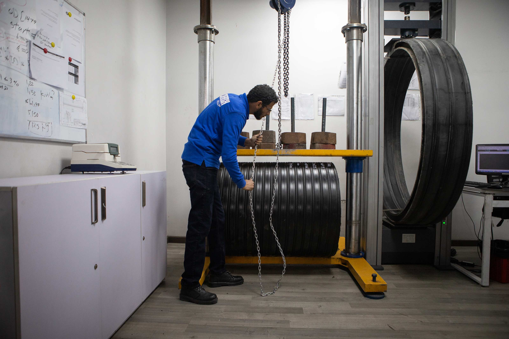
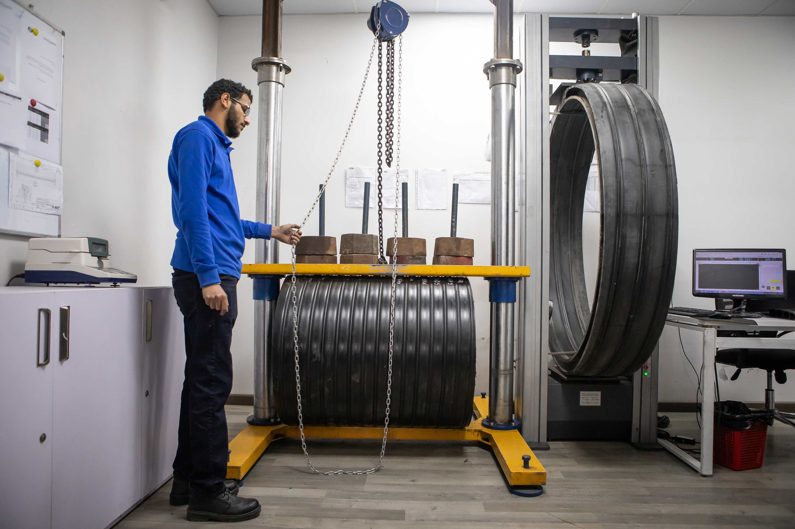
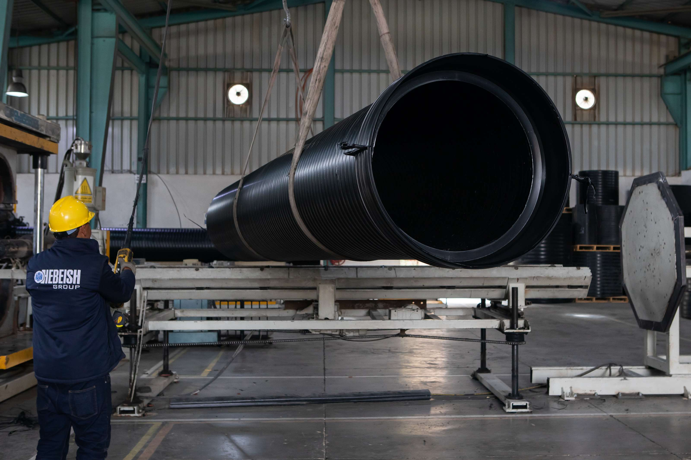

Inputs
Diameter, soil condition, installation case, trench width, and target cover or stiffnessEstimate required stiffness or maximum soil cover from the published tables.
Use the published maximum allowable soil cover tables to estimate required pipe stiffness or maximum allowable cover for buried HDPE pipe systems.
- Mode 1 Enter cover depth and project conditions to estimate the minimum required pipe stiffness.
- Mode 2 Enter pipe stiffness and estimate the maximum allowable soil cover height.
- Table Logic Results come from SR 8, SR 16, and SR 31.5 chart values, with interpolation between published bounds.

Outputs
Required SR class guidance or maximum allowable cover from the shared chartsInteractive tool
Switch between stiffness estimation and maximum depth estimation.
The calculator uses the published cover-height tables for SR 8, SR 16, and SR 31.5. If trench width falls between 1.5D and 3.0D, or stiffness falls between chart classes, the result is linearly interpolated.
Published method
Table-driven result
The calculator reads from the shared maximum allowable soil cover tables for SR 8, SR 16, and SR 31.5.
Interpolation rule
Useful between chart bounds
If the trench width or stiffness falls between published chart values, the calculator interpolates between the nearest supported points.
Testing visuals
Inspection and stiffness imagery keeps the calculator connected to the lab.
These supporting photos keep the engineering page anchored in the physical testing environment, connecting lookup results to specimen preparation, lab review, and ring stiffness verification.


